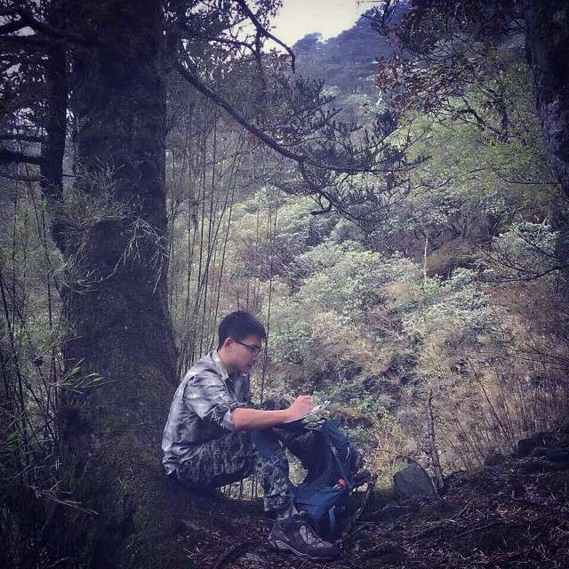
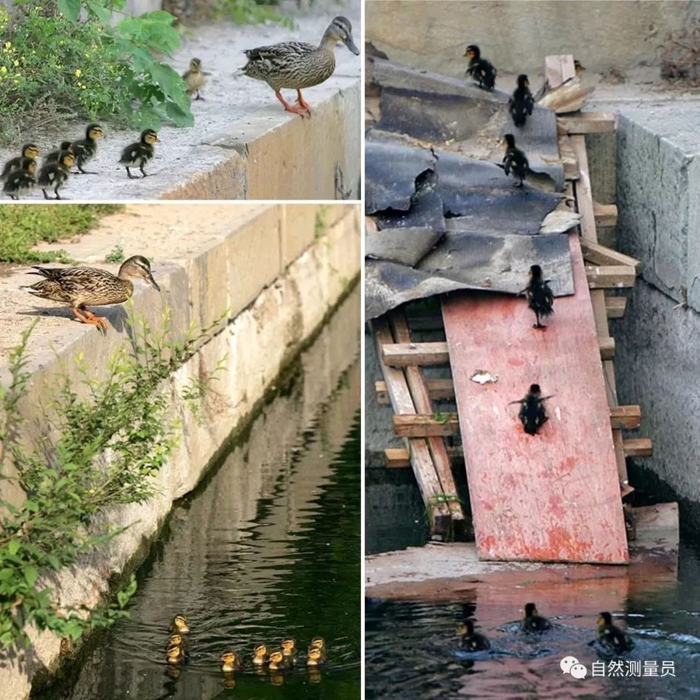
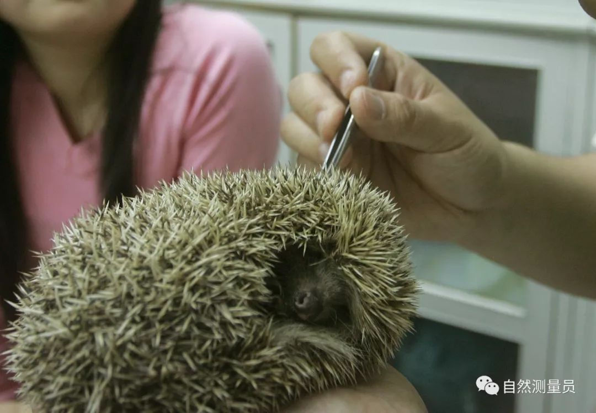

离武汉一百公里的天门，这里的疫情更令人揪心！
原文链接 备份链接 编者荐语： 马子本来计划春节出游，结果回来过个年，就因疫情封城动弹不得了。我俩见个面都难。天门疫情确实严峻，希望大家能多给予关注。瘟疫面前，命无贵贱，人人平等。 © 图文 阅路山 2020年2月4日 立春 武汉封城的 …
以下文章来源于自然测量员 ，作者王放
[
自然测量员
自然测量员——丈量森林，触摸风雨，拍摄动物，讲讲漏洞百出的故事](#)
此时此刻，野生动物恐怕是一个敏感话题——一方面，不能吃、不能抓野生动物慢慢成为共识；另外一方面，病毒引起了人们对蝙蝠的恐惧，连带着影响了城市中偶然出现的刺猬、黄鼠狼和貉。
野生动物研究和保护团队，现在能做些什么？
事实上，我们的工作从未像今天这样急迫。这种急迫不但来自荒野，更扩散到了城市中——只有了解城市野生动物的分布和习性、搞清楚它们对人类活动的响应、评估它们和人类生产生活的重叠，我们才有可能制定合理的管理方案。当没有人说得清一个个城市的刺猬、黄鼠狼、蝙蝠都分布在哪里时，生物多样性管理、风险评估、疾病防治从何做起？总不能靠拍脑袋现猜吧。
无论是物种保护还是自然资源管理，都首先需要了解。没有了解，一切都失去了基础。
生物多样性：被忽视了
复杂性的议题
我们曾经把城市自然一点点抹去，现在又开始一点点补救。因为曾经的失误，在过去的这些年中，生态爱好者们习惯性地把城市生物多样性当成是最美好的存在。
然而生物多样性这个复杂议题之中，有一个关键问题可能被我们忽视了——生物多样性就是生物多样性。某种意义上讲，“多样性”这三个字是世界的本质，既不代表绝对美好，也不代表猛兽恶魔。

北京，市民帮助落入泳池的小绿头鸭脱险｜王放
在美国的弗吉尼亚，我曾经被浣熊和臭鼬所代表的生物多样性迷惑过。起因是一只大脑袋浣熊，扒拉开我的推拉门，抬起头瞪着水汪汪的眼睛要食物。它挨家挨户地敲门作揖，得到了源源不断的猫粮和水。
之后几天，这只浣熊骚扰了我们整个研究所——它爬上电线杆，顺着输电线闯入了办公室，把几个屋子的垃圾桶翻得满地都是，还糟蹋了冰箱里面的食物。然后引发了输电线短路，整个生态实验室和地理分析实验室停电，浣熊自己也在事故中阵亡。
后来我才知道，在美国几乎每个独门独户的市民都能够讲出自己被野生动物骚扰的故事，除了破坏房屋，还有火灾、污染、传染病，以及每年数千万美元的财产损失……

挤进屋子的浣熊带来了研究所的灾祸｜王大军
现在，人们更加重视和保护城市自然。作为科研团队，我们关心的是，在城市生态更加美好的过程中，生物多样性会发生哪些复杂变化。
比如柏林，3000只在城市中安家的野猪，隔三差五就把公园和社区搞得鸡犬不宁。在伦敦和布里斯托尔，每平方千米超过18只的赤狐，彻底改变着地栖哺乳动物和鸟类的组成，进而改变着土壤、水源，甚至是农业生产和畜牧业。

柏林野猪引起的灾祸｜nfw.org
动物在迅速适应城市生活的背后，实际上伴随着更深层次的生物学改变——惊人的适应性让某些动物类群有能力掠夺城市、侵占居民点，以这样的方式入侵人类生活。
这是生物多样性的月之暗面，也是地球最奇特壮阔的变化之一。
所以，该怎么办呢？
简单点说：城市生物多样性的维护和管理充满挑战，是一个不断变化、永无终点的旅程。
复杂点说：多样性就是这个世界的本质，无论你喜欢与否。
和荒野不同，城市没法给动物找到天堂一样不被打扰的栖息地，它们只能和人一起生活。而一次一次的教训证明，投毒、扑杀这些容易在第一时间被想起的措施，都没有办法控制适应能力强大的动物，反而会引起连锁的生态灾难，带来更难以收拾的后果。

即便有一天需要人为手段控制适应能力强大的城市物种，粗暴方法也往往无效｜王放
管理的前提：收集
动物分布、习性信息
在上海的青浦区，我曾经和一只貉度过了很多奇妙的时光。它可能觉得我是一个很好的同伴，好几次一屁股坐在我脚下，在深夜里嘎吱嘎吱挠痒痒发呆。
貉实在是一种有趣的存在，一方面每个人都听说过“一丘之貉”这个成语，另一方面人们甚至不知道它就是一种真实存在的动物，而仅仅把它当成传说中的怪兽。

传说中的貉，在上海分布广阔｜王放
当我们开始系统地追踪城市貉之后，我们发现这个传说中的神秘物种竟然在长三角一带的城市之中大量存在，从上海到南京，从苏州到杭州，整个长三角区域都能够看到它们的身影。上海动物园的徐正强老师和他的团队，仅仅在上海城区就在超过40个小区记录到野生貉。
而我们后续的详细观察，发现了这个物种在城市之中的“变身”超能力——青浦的一个小区旁边有条河，貉会钻到水里变成高超的游泳健将；金山区的貉栖息地旁边有不少丘陵灌丛，貉们展示出掘土、跳跃、和捕猎青蛙的惊人技巧；而到了奉贤和南汇，它们会迅速理解校园和社区设计，在人类世界的夹缝之中繁衍生息。
这样的适应能力提醒着我们，这片土地上也有柏林野猪、伦敦赤狐一样生态位宽泛的动物。随着中国城市环境的不断改善，有一天赤腹松鼠和金花鼠、貉和狗獾、刺猬和野猪，也可能带来复杂的城市管理问题。
一个简单的推论是，如果我们不了解这些物种的分布和数量，不监测它们的种群增减、适应性变化，到了真有任何问题出现的那一天，岂不是只能靠拍脑袋来管理城市生物多样性？
城市生物多样性：
每个人的意见都重要
故事回到貉身上。在上海、在南京，貉通过取食人类丢弃的生活垃圾，寻找到了更简便易得的食物来源。它们的藏身环境也从洞穴和树根，变成了居民别墅阳台下面的裂缝、墙体的空隙、储藏室、桥墩的裂缝、煤气管道、废弃的下水道等等。
可我们跑到小区里面的时候，事情的发展和我们的猜测不同。一些市民觉得我们的发现很好玩，可也有社区居民凑过来，“能不能杀死它们啦？”、“这个獾子讨厌的很啊！”
我问一个阿姨为什么对貉如此负面，阿姨的答案也简单、也有说服力——她喜欢猫也喂猫，但是她发现貉可能会捕食刚出生的小猫。
我试着告诉她，貉是这片土地的原住民，而流浪猫才是在土地被居民占领后的后来者，罪魁祸首是居民的遗弃行为。可无论背后的生态过程如何，我们理解阿姨的诉求，也明白她有理由因为貉杀死了自己喜欢猫的幼崽而难过。
同样的故事还有很多：当居民问我们貉会不会传播狂犬病的时候，我们会说理论上有这个可能，不仅是狂犬病，还有可能携带疥螨、犬瘟热、细小病毒等等。虽然这些病是由流浪猫狗传到貉身上，但无论如何，城市中存在着这个风险。
当居民问我们刺猬有没有风险的时候，我们会说这取决于是否是脑炎疫区，是否有疫情，但确实刺猬可能携带吸血蜱虫，但您只要不摸，就没有问题……

一只简单的刺猬，身上可能有数十只吸血的硬蜱｜王放
如何调查动物是我们的本行。我们在城市里面设计了监测网络，用Occupancy Model、Bayesian Method等方式分析。
而如何管理城市生态系统，恐怕需要整合每个人的意见。
怎么办？既然在城市生物多样性管理的过程中，每个人的意见都很重要，那为什么不让每个人都参与进来呢？
疫情之前，我们组织了一支市民队伍，开始了一次公民科学的探索。
80台相机、100个人：
一个城市的动物
此时此刻，在上海，有80台红外触发相机，正在日夜记录着城市动物的分布和变化，无论是国庆、元旦前后的游园高峰，还是假期的冷清，或者是这个疫情阴云笼罩下的闭园时期。
2020年1月2日顾村公园，公民科学家团队的城市动物调查｜武亦乾
我们开始完整地调查野生动物在城市的分布、习性，和人类的关系，以及它们对于环境变化的适应性，在疫情开始之前，成功启动了我们的监测网络。
调查地点包括了共青森林公园、滨江森林公园、上海植物园、上海动物园、闵行体育公园、虹旭社区、复旦大学校园、上海海洋大学校园、南汇城郊、浦江郊野公园、顾村公园等区域。
在你读到这句话的这一刻，这个网络也在无人值守的情况下一刻不停地记录着。

我们记录了四十多种动物的分布和习性｜王放
完成这些调查工作的，除了复旦大学保护生物学研究团队只外，还有一个近百名市民构成的公民科学家团队。
这些无接触的调查，最大程度避免了市民直接接触动物的风险。与此同时，每一名“公民科学家”都有自己的愿望和爱好，在项目中都会输入自己对于更好的城市生态的期望。
我们在产出两种东西：
这两样产出加在一起，也许有机会得出一个答案：今天我们对于城市生物多样性的了解、期待、与要求。
新型肺炎带来了人们对于野生动物的巨大疑惑——能否共存？如何共存？我们国家的城市，急切地需要一个答案。
而这80个探头和100个人，希望完成如下两件事情：
积累基础数据，作为一切管理方案的基础；
结合公民的力量，整合公众意见。
这些工作，从未如此急迫。这整个工作背后，是我们对一个更加美好世界的期待。
作者：王放
编辑：游识猷

本文经原作者授权转载
如需二次转载请联系原作者微博 @王放_自然测量员

原文链接 备份链接 编者荐语： 马子本来计划春节出游，结果回来过个年，就因疫情封城动弹不得了。我俩见个面都难。天门疫情确实严峻，希望大家能多给予关注。瘟疫面前，命无贵贱，人人平等。 © 图文 阅路山 2020年2月4日 立春 武汉封城的 …
原文链接 备份链接 _ 建议疫情较轻的城市管理者要有敢于承担风险的意识，最大化提高科学防控方法和手段，自行决定何时复工和开业，从而降低经济和社会风险，恢复经济的正常平稳运行 _ 文 | 李铁 从1月23日武汉封城开始，已经过去半个多月了。 …
原文链接 备份链接 连续工作了四天的晓阳，今天迎来了第一个休息日。昨晚和男友林峰视频后，他又抽空给林峰写了封信。经过晓阳授权，现转载如下： 峰哥吾爱： 见字如面！算着离别的日子，我总是在想你何时才能陪伴我左右。今天全副武装，一个班下来， …
原文链接 备份链接 从1月23日“封城”到元宵节，已经过去整整17天。即使我每天忙于记日记，也觉得时间过得很快啊。 过去我要早起，6点起床，7点到办公室，不堵车。现在则是天天睡到自然醒，有点提前退休的感觉。虽然我还有两年上班的时间。 …
原文链接 备份链接 点击上方蓝字 _ 关注我们 _ 非常时期，武汉成了全国人民挂念、祈福的城市。封城后，武汉人民的真实生活是什么样？ 正和岛自1月26日起特别推出《叶青：我在武汉疫区的第N天》专栏。叶青是一位定居武汉40年的市民，也是一名 …